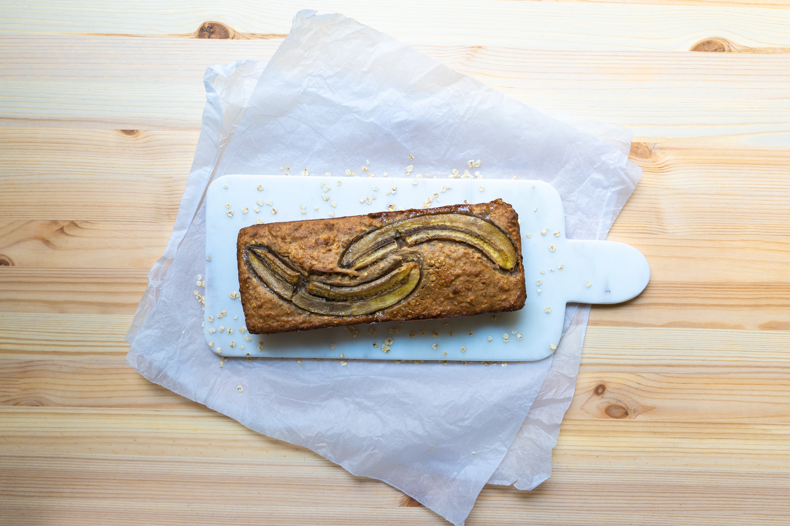

Banana Bread

Description
Ingredients
- 3 Overripe Bananas
- 2 Cups GF Flower
- 1/2 Cup Maple Syrup
- 1 Teaspoon Vanilla Extract
- 1/2 Teaspoon Salt
- 3/4 Teaspoon Cinnamon
- 1 Teaspoon Baking Soda
- 2 Eggs
- 1 Stick of Butter
Steps
- Combine dry ingredients
- Using potato masher, mash bananas until they form a liquid
- Melt butter, add to mashed bananas
- Add vanilla extract to wet mixture
- Scramble eggs and add to wet mixture
- Add maple syrup to wet mixture
- Combine wet ingredients to dry, mix until completely combined
- Bake at 350 degrees for 50 minutes